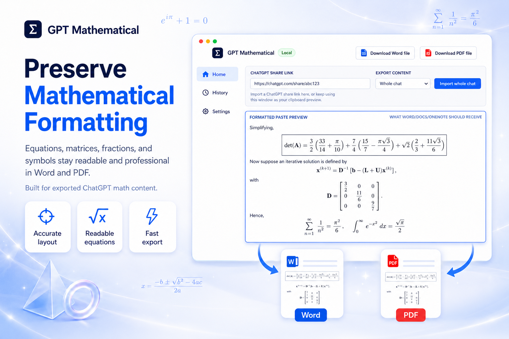

Copy the share link
Create a ChatGPT shared conversation link for the math-heavy answer you want to preserve.
Professional formatting for ChatGPT math output
Convert ChatGPT formulas, derivations, tables, and code into a polished Word document that keeps mathematical structure readable instead of dumping raw Markdown into your report.
From ChatGPT math to submission-ready Word
GPT Mathematical imports the ChatGPT share link, extracts the mathematical answer, formats equations and Markdown structure, then shows a preview before you save the `.docx`.

Three-step workflow
Create a ChatGPT shared conversation link for the math-heavy answer you want to preserve.
Paste the link into GPT Mathematical, choose the whole chat or one response, and inspect the formatted math preview.
Save a `.docx` with supported equations, headings, tables, lists, and code carried into Word.
Professional output, less cleanup
Recognizes common LaTeX and STEM notation so equations do not arrive as messy raw text.
Keeps headings, lists, emphasis, code blocks, and tables organized for report-style writing.
Review the formatted result and fallback text before committing it to a Word document.
Download a `.docx` with supported LaTeX converted into native Word math structures.
Use a ChatGPT share URL to bring the full answer into the app without manual copying and cleanup.
Runs quietly in the system tray with import, preview, manual conversion, and settings tools.
Why it sells
Positioning
The pitch is simple: stop reformatting ChatGPT equations by hand before they can go into Word.
A practical utility for classrooms where AI math output still has to become a readable handout.
Formula formatting is the feature that makes long technical answers easier to preserve.
Launch pricing
Starter
For trying formula cleanup on personal STEM writing.
Professional
For daily ChatGPT math-to-Word workflows across reports and notes.
Lifetime
For early buyers who want the desktop app without another subscription.
Teams
For labs, departments, tutoring teams, and AI-enabled document teams.
FAQ
Copy a public ChatGPT share link, paste it into GPT Mathematical, preview the formatted math output, then download a Word document.
The Word exporter converts supported LaTeX patterns into Word math. Very complex formulas may still need review, which is why the preview and fallback text are visible.
ChatGPT shared conversations with Markdown, headings, lists, tables, code blocks, and common LaTeX/STEM notation.
The app exports Word documents as the main outcome and also copies the formatted result to the clipboard for quick reuse.
Teachers, students, researchers, analysts, engineers, and anyone turning AI-generated technical content into polished notes, handouts, reports, or documentation.
Ready for launch packaging